5 Máquina de Vetores de Suporte ou Support Vector Machine


5.1 Introdução
Nas unidades anteriores, foi usado o recurso de representar um Exemplo de Treinamento por um ponto num plano cartesiano, como no caso da flor Íris (Figura 5.1). As Regras de Classificação, por sua vez, eram representadas por retas tracejadas e ilustravam como o Modelo Aprendido classificava os Exemplos.
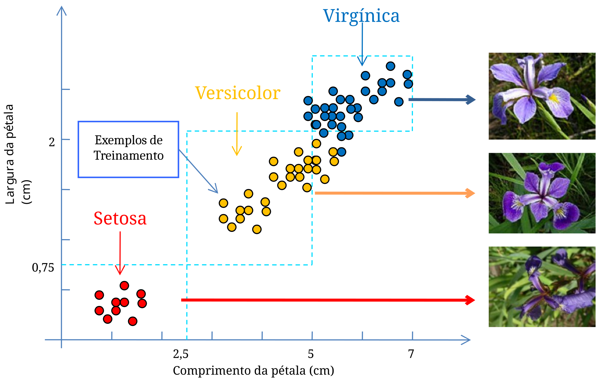
1 Fonte: Wikimedia Commons - Iris virginica (Acessado em 03.03.26).
{kind=link}
2 Fonte: Wikimedia Commons - Iris versicolor (Acessado em 03.03.26).
{kind=link}
3 Fonte: Wikimedia Commons - Iris setosa (Acessado em 03.03.26).
{kind=link}
Tanto as Regras de Associação e Classificação quanto as Árvores de Decisão podem ser vistas como representantes de um paradigma de aprendizado supervisionado denominado Aprendizado Orientado a Conhecimento, porque são de fácil compreensão e utilização pelos seres humanos. Outro nome que se dá a este tipo de aprendizado é Paradigma de Aprendizado Simbólico, porque ele cria Representações Simbólicas do Modelo gerado, tais como Árvores de Decisão, Regras etc.
Vamos agora estudar um novo paradigma de aprendizado supervisionado, conhecido como Paradigma de Modelos Funcionais, que em geral apresenta resultados com melhor precisão que os representantes do paradigma Orientado a Conhecimento, mas que para entender como se chegou a determinado resultado há que ter um certo preparo em matemática. Este tipo de aprendizado também é conhecido como Paradigma do Aprendizado Estatístico, porque ele utiliza Modelos Estatísticos para guiar a geração do Modelo induzido durante o treinamento.
Como o escopo desta unidade não é a apresentação da teoria matemática dessa classe de algoritmos, vamos reduzir a um mínimo as deduções matemáticas e nos valer de ilustrações gráficas e interpretações geométricas das ideias fundamentais deste interessante tópico.
Dois dos algoritmos de aprendizado supervisionado mais populares dos Modelos Funcionais, são as Redes Neurais4 ou Neural Networks, e as Máquinas de Vetores de Suporte ou Support Vector Machine. A teoria matemática sobre as Máquinas de Vetores de Suporte foi apresentada à comunidade científica por (Cortes; Vapnik (1995)), em meados da década de 1990, e desde então suas implementações algorítmicas têm produzido resultados animadores para o problema do reconhecimento de padrões em Bases de Dados.
4 Em inglês, o termo “neural” é usado tanto para tópicos do sistema nervoso quanto para neurônios. Em português, no entanto, temos dois adjetivos distintos: neuronal e neural, sendo este último relacionado a nervos e ao sistema nervoso em geral. Como a inspiração inicial para as “neural networks” foram os neurônios, a tradução mais adequada para o português deveria ser “redes neuronais”, mas como “redes neurais” acabou prevalecendo, vamos manter esta terminologia.
5.2 Representação dos Exemplos como Vetores
Nesta introdução a Máquinas de Vetores de Suporte (MVS), vamos passar a representar um Exemplo de Treinamento por um vetor, e o Modelo Aprendido, por outro vetor, chamado de Vetor Peso \(\mathbf{w}\). Qual a vantagem dessa forma de representação? A vantagem é que para classificar um Exemplo, bastará fazer o produto de dois vetores, algo computacionalmente simples. No contexto de classificação com MVS, mostraremos que o resultado dessa multiplicação será sempre ou “\(+1\)” ou “\(-1\)”. Dessa forma, por meio da operação de produto interno entre dois vetores, os Exemplos de Teste serão classificados como pertencentes ou à classe “\(y = +1\)” ou à “\(y = -1\)”.
Embora o algoritmo de aprendizado de um Modelo Funcional seja bem diferente daqueles algoritmos de aprendizado Orientado a Conhecimento, a formalização do problema da classificação continua a mesma. Em termos práticos, estamos simplesmente substituindo um módulo de classificação por outro, que desempenha a mesma função, possivelmente de forma mais complexa, porém com melhores resultados para muitos casos.
Um classificador binário é equivalente a uma função que faz o mapeamento de um conjunto de atributos de entrada, agora representados por um vetor \(\mathbf{x}\), em uma das classes “\(y = +1\)” ou “\(y = -1\)”. Em termos matemáticos,
\[ y = f(\mathbf{x}), \qquad y \in \{-1,\ +1\} \qquad \text{e} \qquad \mathbf{x} \in \mathbb{R}^{N} \tag{5.1}\]
Por exemplo, num plano cartesiano, um ponto \(\mathbf{x} \in \mathbb{R}^{2}\) pode ser descrito tanto por suas coordenadas \((x_1, x_2)\), quanto por um vetor. Por esta razão, daqui para frente, em vez de utilizarmos o termo Exemplos de Treinamento, vamos falar em Vetores de Treinamento (cuja ilustração aparece na Figura 5.2). Da mesma forma, falaremos em Vetores de Teste em vez de Exemplos de Teste.
Para efeito didático, consideraremos um ponto no plano ou um vetor como representações equivalentes, e usaremos sempre a representação mais conveniente para o argumento em questão.
Por opção metodológica, vamos comparar as MVS com as Redes Neurais, com o propósito de mostrar como algumas das dificuldades mais sérias apresentadas pelas Redes Neurais têm sido superadas com as MVS. Mas, aproveitamos para reafirmar uma constatação empírica mencionada em outra unidade de que em Mineração de Dados não existe um algoritmo que sempre mostre desempenho superior aos demais para qualquer Base de Dados. Muitos autores consideram a Mineração de Dados mais uma arte que uma ciência, porque via de regra é preciso certo traquejo do operador e uma boa dose de experimentos empíricos para melhorar os resultados práticos.
Aliás, um dos objetivos deste livro de Sistemas Inteligentes, e especialmente desta unidade, é propiciar experiências que favoreçam o desenvolvimento da sensibilidade indispensável a um usuário competente da Mineração de Dados.
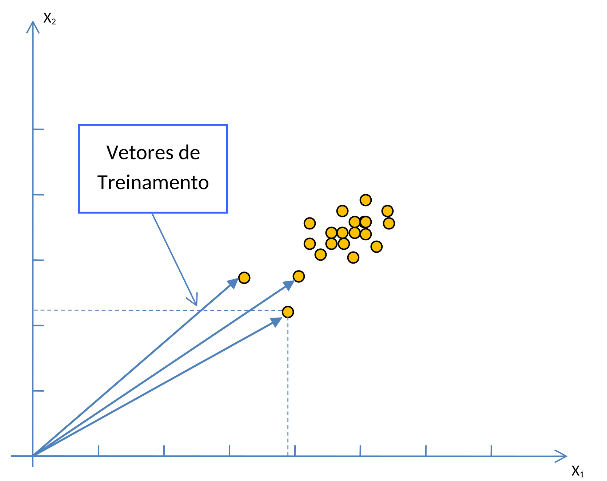
5.3 Classificadores Lineares
Vamos voltar ao conjunto de dados da flor Íris, porque este exemplo clássico apresenta situações típicas de um problema de classificação real. Olhando a Figura 5.1, nota-se que não há qualquer dificuldade para distinguir a Íris Setosa das Íris Versicolor e Virgínica. Mas a situação é bem diferente quando consideramos a Íris Versicolor com a Virgínica, porque há uma região comum a ambas. Encontrar um classificador que separe linearmente estes dois tipos de Íris constitui uma tarefa nada simples.
Vamos então dividir o problema em duas partes e considerar inicialmente apenas os tipos Setosa e Versicolor, já que a separação entre ambas parece ser bem mais simples. Com os resultados obtidos para os casos linearmente separáveis, vamos estendê-los aos casos não separáveis linearmente, com algumas adaptações.
A Figura 5.3 apresenta os dados apenas da Íris Setosa e Versicolor, com vários classificadores possíveis. Qual deles devemos escolher?
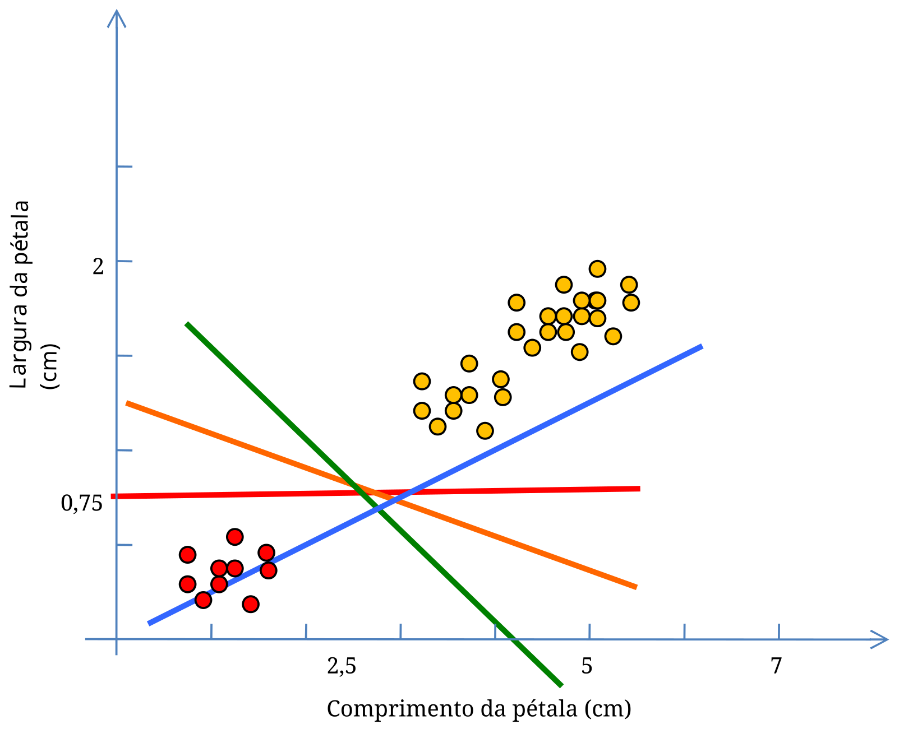
Talvez antes de dar uma resposta a esta pergunta, seria oportuno colocar outra questão ainda mais básica. Por que tentar fazer a separação entre as classes usando uma reta e não uma curva que se adapte aos dados? Porque usar uma reta, ou uma função linear para separar classes é matematicamente menos custoso do que outras formas de curvas, ou funções polinomiais, além de tornar o problema do overfitting menos provável. A equação de uma reta exige um tratamento matemático simples, resultando num custo computacional mais baixo do que o custo dos polinômios de grau maior ou igual a dois.
Dentre todas as possibilidades, o classificador azul parece ser o menos indicado porque ele comete vários erros de classificação durante o treinamento. Seu poder de generalização já se mostra antecipadamente comprometido. Mas dentre os restantes, qual deles vai apresentar o melhor desempenho na fase de teste? Ou seja, qual deles tem a melhor capacidade de generalização? Será este o melhor critério a utilizar para escolher um classificador?
Em outros algoritmos de Aprendizado Supervisionado de Classificadores Lineares, como o Perceptron5 (Rosenblatt (1957)), os três classificadores da Figura 5.3 que não cometem erros de classificação durante o treinamento seriam considerados igualmente bons. Aliás, como na resposta do Perceptron, e das Redes Neurais em geral, há um componente probabilístico, em cada simulação com o mesmo conjunto de Vetores de Treinamento, qualquer uma das três retas poderia ser escolhida alternadamente como o classificador linear. Para o Perceptron, desde que um classificador linear faça a separação das classes sem cometer erros durante o treinamento, ele é tão bom quanto seus pares que mostrarem o mesmo resultado.
5 O Perceptron é um tipo de Rede Neural simples, com apenas uma camada de neurônios.
Para as MVS, no entanto, que utilizam um algoritmo determinístico, existe um classificador considerado melhor que todos os demais, porque ele possivelmente vai minimizar os erros de classificação na fase de teste. E este classificador é o que maximiza suas margens, tornando-as as mais largas possíveis antes de tocar os primeiros pontos do plano, que representam os Vetores de Suporte (Figura 5.4). Note que o vetor peso \(\mathbf{w}\), também conhecido como vetor normal \(\mathbf{w}\), é perpendicular à reta que representa o classificador. Portanto, conhecendo-se o vetor \(\mathbf{w}\), a inclinação do classificador estará determinada.
Note que o classificador vermelho da Figura 5.3, por exemplo, também separaria sem erros as duas classes, mas suas margens não seriam tão largas quanto as mostradas na Figura 5.4. E como encontrar este classificador que maximiza as margens? Primeiramente considerando o conjunto de pontos como um Conjunto Convexo, e depois encontrando a menor distância entre eles. A reta de separação, i.e., o classificador, é perpendicular ao menor segmento que une os dois conjuntos.
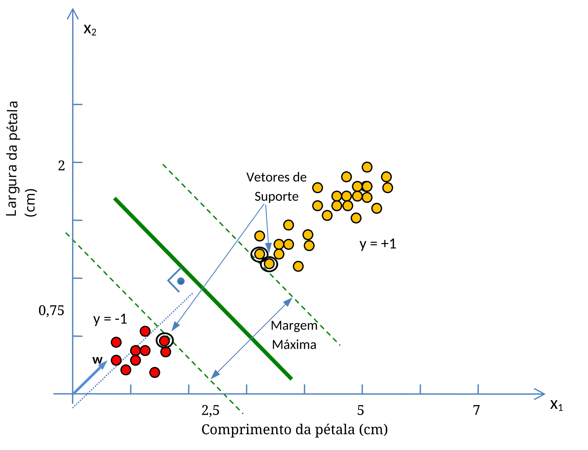
5.4 Conjunto Convexo
Se conectarmos cada ponto de um conjunto aos demais pontos restantes, o polígono externo que resulta será um polígono convexo, e o conjunto de pontos delimitados por este polígono será chamado de conjunto convexo.
A Figura 5.5 mostra como as duas classes de Vetores de Treinamento podem ser representadas por dois conjuntos convexos (com as conexões dos pontos internos omitidas para tornar mais clara a apresentação).
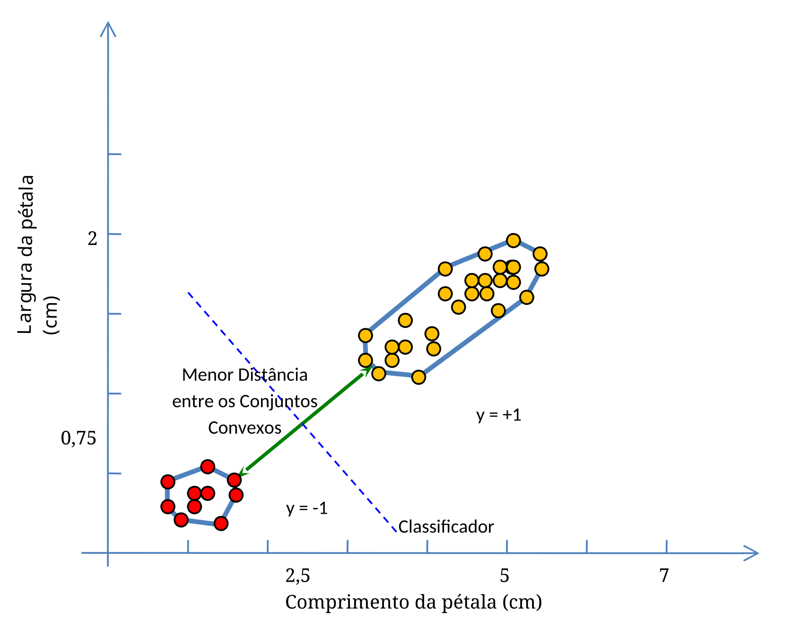
A vantagem de se considerar as classes como se fossem dois conjuntos convexos é que na busca pelo menor segmento que une estes dois conjuntos, não ocorre o problema do mínimo local. Enquanto a distância entre ambos estiver diminuindo, a direção seguida estará correta.
A analogia para este procedimento é que o Algoritmo de Aprendizado pode ser visto como um método de otimização 6 de uma Função Custo. A cada iteração do processo de aprendizado a Função Custo é avaliada e, se seu valor decrescer, os pesos do vetor peso \(\mathbf{w}\) são atualizados. O processo continua até encontrar o valor mínimo.
6 Este método é conhecido como Otimização Convexa.
Esta forma de otimização produz bons resultados quando a Função Custo não apresenta mínimos locais, i.e., quando há apenas um mínimo global. No caso das Redes Neurais, geralmente a Função Custo apresenta mínimos locais, o que obriga a adoção de mecanismos mais complexos de otimização, como manter alguns registros do que se acredita ser o mínimo global atual, e continuar atualizando os pesos do vetor \(\mathbf{w}\) mesmo que a Função Custo esteja aumentando (Figura 5.6).
Se um novo mínimo for encontrado, os registros antigos são apagados e novos valores de peso são adotados. Embora este procedimento heurístico aumente as possibilidades de detectar o mínimo global, não há nenhuma garantia de que ele será encontrado, a menos que se pague um alto custo computacional com uma busca exaustiva.
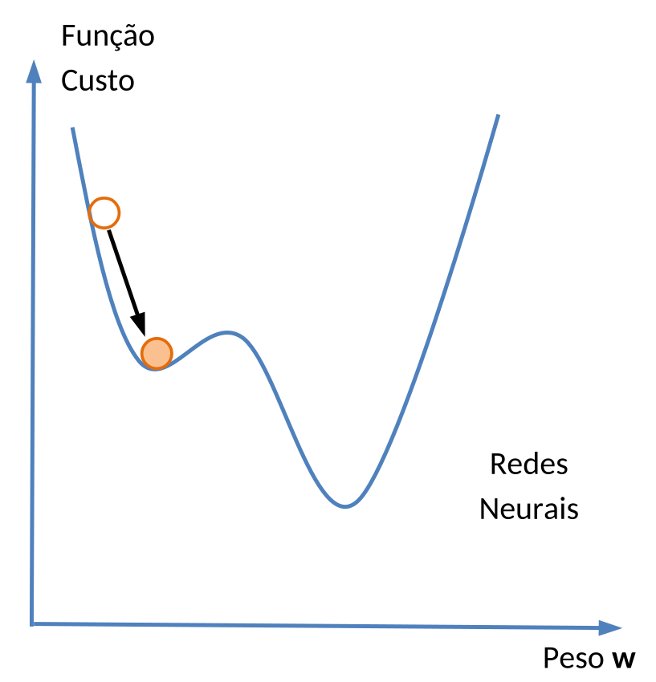
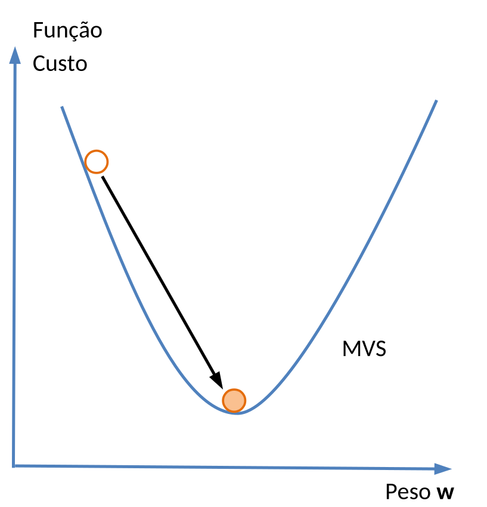
5.5 Classificadores Não Lineares
Se as duas classes não forem linearmente separáveis, a teoria de MVS prevê o mapeamento dos pontos do Espaço de Entrada para outro espaço de maior dimensão, conhecido como Espaço de Característica. A Figura 5.7 mostra uma situação em que os dados não podem ser linearmente separados. Para fazer a separação entre ambas podemos usar não uma reta, mas uma curva descrita por uma função polinomial, ou tentar um recurso matemático conhecido como Truque do Núcleo ou Kernel Trick.
O uso de funções polinomiais, além de apresentar risco de alto custo computacional, pode favorecer o ajuste excessivo da curva polinomial aos Vetores de Treinamento, podendo então ocorrer problemas de overfitting decorrente da instabilidade causada pela enorme influência que um ou outro vetor pode ter sobre a curva polinomial. Já o princípio de margem máxima das MVS traz mais estabilidade na classificação, diminuindo as chances de overfitting. Para entender melhor este comportamento, vamos primeiramente ver o que significa usar um kernel 7.
7 Embora o termo “kernel” possa ser perfeitamente traduzido para o português como “núcleo”, a tradução não parece ter prevalecido por aqui, sendo mais comum a utilização de kernel.
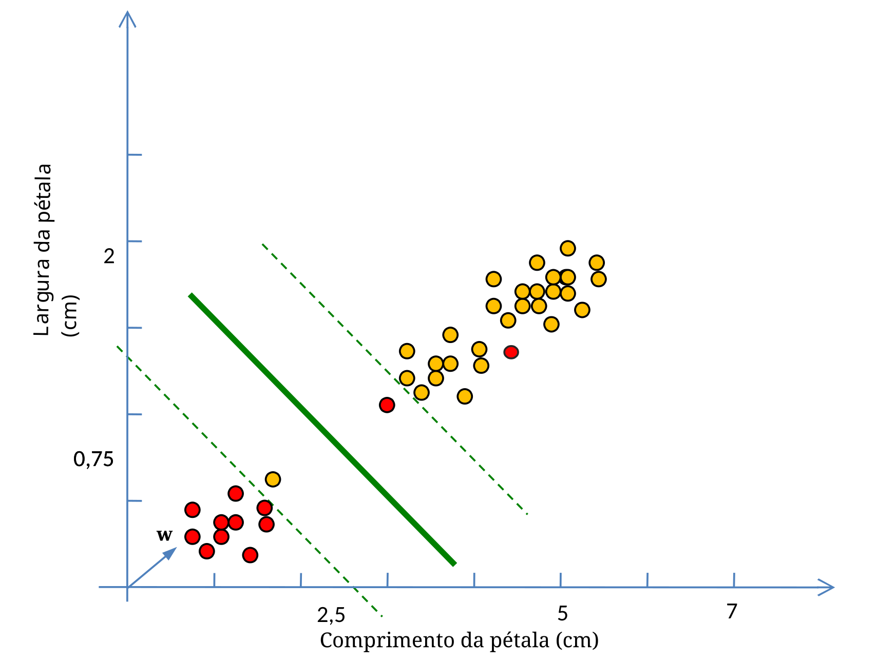
A ideia por trás dos kernels é mapear os Vetores num espaço de dimensão mais elevada que a original. Por exemplo, se o espaço original dos Vetores de Entrada for bidimensional, podemos introduzir algumas redundâncias em suas coordenadas e mapear estes mesmos vetores num espaço tridimensional. Qual o propósito disso? É que duas classes não separáveis linearmente num espaço bidimensional podem se tornar linearmente separáveis num espaço tridimensional, como ilustra a Figura 5.8.
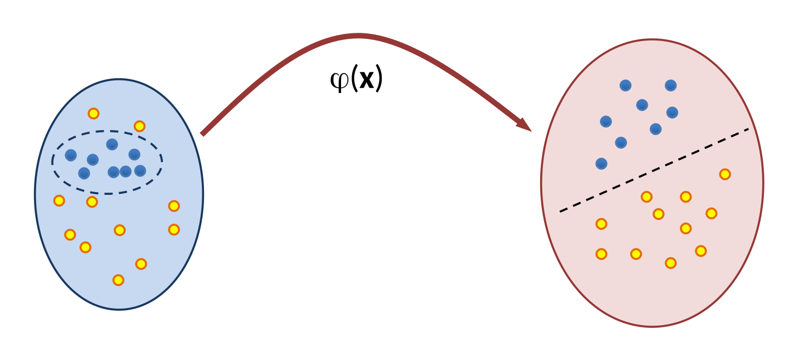
Essa transformação em que os vetores são representados num espaço de dimensão mais elevada, geralmente é uma transformação não linear \(\varphi(\mathbf{x})\). O espaço de partida dessa transformação não linear é conhecido como Espaço de Entrada e o espaço com dimensão mais alta é conhecido como Espaço de Características.
O que se busca com esta transformação é linearizar o Espaço de Características, e com isso tornar os dados linearmente separáveis. Pode parecer paradoxal, mas através de uma transformação não linear é possível linearizar o Espaço de Características.
Vamos reproduzir um exemplo, apresentado por Schölkopf; Smola (2001), ilustrando como esta transformação não linear pode ser feita. Suponha um Espaço de Entrada bidimensional, composto por duas classes não separáveis linearmente. Aplicando-se o truque do kernel, vamos mapear esses dados num Espaço de Características tridimensional, como ilustrado na Figura 5.9.
Observando-se o resultado da operação mostrada na Figura 5.9, verifica-se que a transformação não linear \(\varphi(\mathbf{x})\) não criou novas variáveis; ainda estamos trabalhando com \(x_1\) e \(x_2\) no início e no fim da transformação. As variáveis \(z_1\), \(z_2\) e \(z_3\) são apenas elementos intermediários que ajudam no entendimento da transformação operada nos dados. Isso significa que não será necessário computar explicitamente a transformação \(\varphi(\mathbf{x})\) para obtermos no Espaço de Entrada resultados semelhantes àqueles que obteríamos se as operações tivessem sido feitas no Espaço de Características.
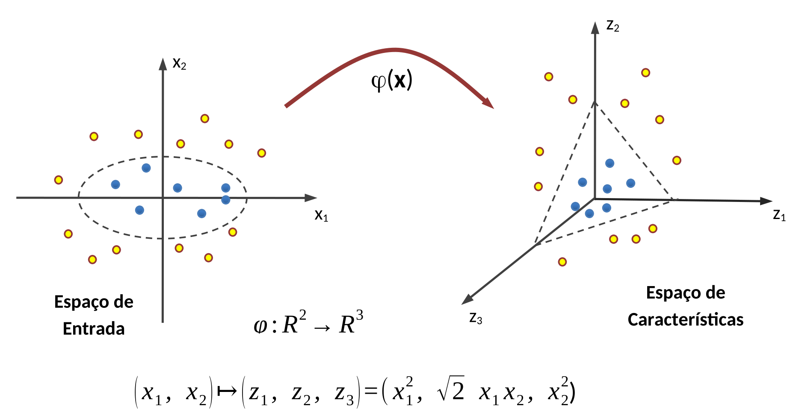
O truque do kernel permite que as operações de produto interno entre dois vetores no Espaço de Características sejam computadas como se ainda estivéssemos no Espaço de Entrada. Como, para efeitos práticos, não houve efetivamente aumento da dimensão do espaço onde ocorrem as operações de produto interno, o truque do kernel oferece a possibilidade de escapar das complicações que as operações no Espaço de Características poderiam trazer. Por isso, os matemáticos dizem que kernels podem ajudar fugir da Praga da Dimensionalidade.
Existem vários kernels conhecidos (Polynomial, RBF etc.), alguns desenvolvidos para aplicações específicas, como kernels para bioinformática, para classificação de imagens ou caracteres etc. Como as MVS se enquadram no paradigma do aprendizado supervisionado, isso significa que existe um Conjunto de Vetores de Treinamento, cujos rótulos de classe são previamente conhecidos. Portanto, com um pouco de teoria e uma dose de experimentação é possível desenvolver kernels que aumentem a taxa de sucesso durante o treinamento.
Se o Conjunto de Treinamento for uma amostra representativa dos Vetores de Teste, então uma alta taxa de sucesso no treinamento possivelmente significará boa capacidade de generalização para o teste. Caso contrário, não será possível fazer previsões confiáveis com relação à taxa de sucesso nos testes.
5.6 Margem Suave Máxima
Há casos porém em que mesmo com a linearização do Espaço de Características, obtida com o truque do kernel, as classes continuarão não separáveis linearmente. O que fazer nessa situação?
A solução adotada pelas MVS foi criar uma “margem suave” que admite ruídos, mas estabelece uma penalidade para cada caso de classificação equivocada. Considere um parâmetro \(C\), chamado de Parâmetro de Complexidade \(C\), que aplica uma pena a cada vetor classificado erroneamente. A Figura 5.10 ilustra diversas situações envolvendo violações das bordas de classificação.
Se considerarmos primeiramente as margens verdes tracejadas do classificador da Figura 5.10, notamos que embora os vetores 1 e 2 tenham violado os limites das margens verdes, eles estão classificados do lado correto do plano. Os vetores 3, 4 e 5, por sua vez, estão do lado oposto ao que deveriam estar. Portanto, a penalização para estes casos distintos deve ser diferenciada, de acordo com a distância da margem.
O ajuste do parâmetro \(C\) ajuda a encontrar um compromisso entre a tolerância a vetores classificados erroneamente devido a margens amplas (valor de \(C\) baixo) e a minimização dos erros de treinamento (valor de \(C\) alto, e margens estreitas). As margens verdes correspondem a um Fator de Complexidade \(C\) baixo (\({\sim}1\)), enquanto que as margens vermelhas correspondem a um valor de \(C\) alto (\({\sim}10\)).
Note que a minimização dos erros de treinamento nem sempre é uma garantia de elevada taxa de sucesso na fase de testes. Isso depende de quão representativo é o Conjunto de Treinamento com relação ao Conjunto de Teste, e do kernel escolhido. Para encontrar o melhor valor de \(C\), geralmente são coletados vários resultados empíricos usando o método da cross-validation.
A Figura 5.10 ainda ilustra o fato de que, uma vez encontrada a reta de separação dos dados, apenas os Vetores de Suporte (aqueles pontos que tocam as margens) passam a ter importância para a fase de testes. Todos os demais Vetores de Treinamento podem ser desconsiderados porque eles não têm qualquer influência sobre as margens. A implicação desse fato para o desempenho do classificador é decisiva, uma vez que para classificar um novo ponto no plano, basta considerar os Vetores de Suporte, que são os delimitadores das margens.
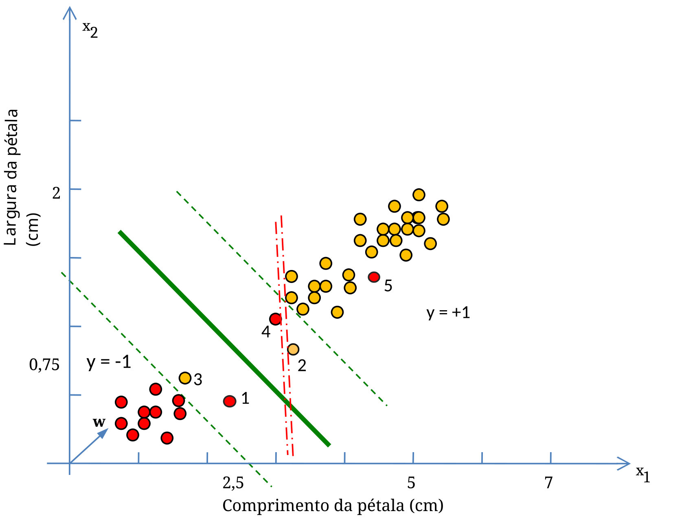
5.7 Ferramental Matemático Básico
Vamos agora, de forma sucinta, dar uma ideia de como as bordas de decisão de uma MVS podem ser obtidas matematicamente num espaço bidimensional. Considere o plano cartesiano da Figura 5.11 e os respectivos vetores \(\mathbf{x}\) e \(\mathbf{w}\).
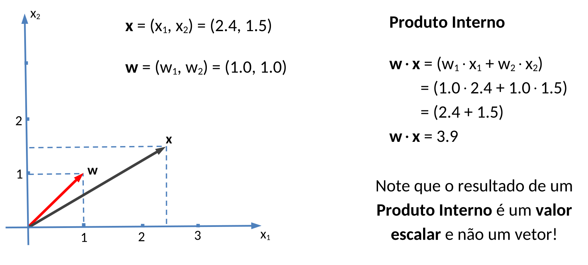
O Produto Interno de dois vetores, também chamado de Produto Escalar ou Produto de Ponto, gera como resultado uma grandeza escalar, ou seja, um número real. Para sua representação, podemos usar tanto um ponto, \(\mathbf{w} \cdot \mathbf{x}\), quanto os sinais de maior e menor, \(\langle \mathbf{w}, \mathbf{x} \rangle\). As letras em negrito representam um vetor, enquanto que as letras simples representam uma grandeza escalar. Usando Produto Escalar, qualquer segmento de reta pode ser representado no plano da forma mostrada na Figura 5.12.
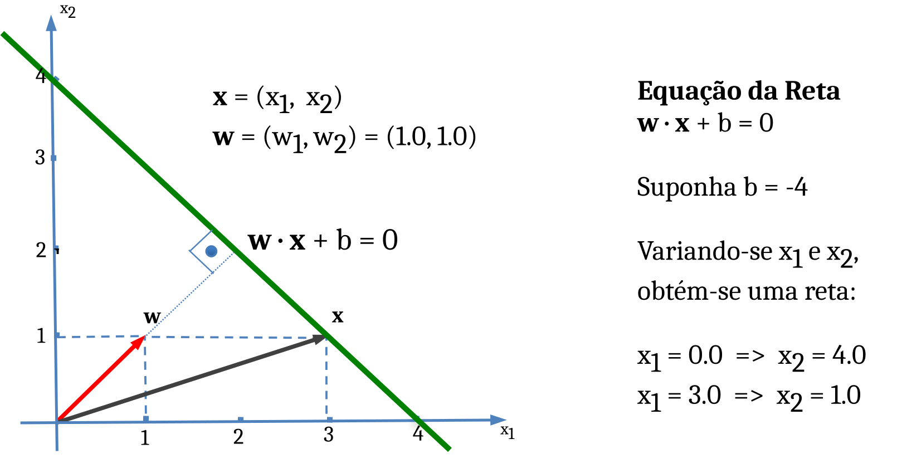
Para representar uma reta e suas margens, usamos o mesmo procedimento (Figura 5.13).
Como estamos interessados em maximizar as margens, ou seja, tornar o módulo da subtração de \(\mathbf{x}_1\) por \(\mathbf{x}_2\), \(\|\mathbf{x}_1 - \mathbf{x}_2\|\), o mais largo possível, isso equivale a minimizar o módulo do vetor peso \(\mathbf{w}\), já que
\[ \|\mathbf{x}_1 - \mathbf{x}_2\| = \frac{2}{\|\mathbf{w}\|} \tag{5.2}\]
A Equação 5.2 mostra que quanto menor o módulo de \(\mathbf{w}\), mais largas serão as margens!
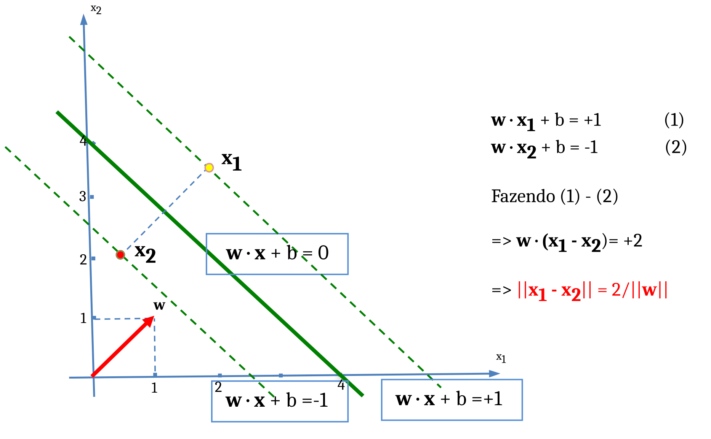
Dessa forma, a Função de Aprendizado de uma MVS consiste em “testar” coordenadas para \(\mathbf{w}\) de tal modo que seu módulo decresça a um mínimo, fazendo com que as margens se alarguem, até o limite em que elas toquem os primeiros Vetores de Treinamento nas bordas de decisão. Quando isso ocorrer, estes Vetores de Treinamento que foram atingidos pelas margens do classificador se tornam os Vetores de Suporte da MVS.
Existem técnicas matemáticas de otimização deste problema, por exemplo a Programação Quadrática, bastante conhecida entre os matemáticos, e que foram aproveitadas por Cortes; Vapnik (1995) para desenvolver o algoritmo da MVS. Sucintamente o problema pode ser formalizado da forma exposta a seguir.
Dado um Conjunto de Treinamento: \((\mathbf{x}_1, y_1), (\mathbf{x}_2, y_2), \ldots, (\mathbf{x}_N, y_N)\)
O Hiperplano com Margem Máxima é definido pelo par \((\mathbf{w}, b)\) que resolve o seguinte problema:
\[ \text{Minimize:} \quad \|\mathbf{w}\|^2 \]
\[ \text{Sujeito a:} \quad y_i(\mathbf{w} \cdot \mathbf{x}_i + b) \geq 1, \quad \forall\, i = 1, \ldots, N \]
Mais detalhes de como solucionar a forma dual desse problema de Programação Quadrática podem ser obtidos na referência bibliográfica desta unidade de estudo.
Há uma interessante implementação de MVS, proposta por Platt (1998), conhecida como SMO (Sequential Minimal Optimization), que em vez de considerar todos os Vetores de Treinamento conjuntamente, eles são divididos em pares e seus valores ótimos são deduzidos analiticamente. Embora o número de operações matemáticas aumente com relação à forma mais tradicional de resolver numericamente o problema com um sistema de equações, estas operações matemáticas da forma analítica são simples, operações aritméticas básicas, e portanto muito rápidas num computador. Dessa forma, o ganho no tempo total de computação pode ser significativo.
Outro atrativo muito interessante da implementação SMO é que não é necessário carregar simultaneamente todos os Vetores de Treinamento na memória principal do computador. Considerando aplicações reais, com centenas de milhares ou milhões de Vetores de Treinamento, o algoritmo SMO pode ser o mais indicado.
5.8 Como Visualizar as Bordas de Decisão de uma MVS Usando o Weka
A ferramenta Weka (Frank; Hall; Witten, 2016) permite rodar várias implementações de SVM, ajustar o Parâmetro de Complexidade \(C\), entre outros, e visualizar as Bordas de Decisão obtidas.
Passo 1 — Primeiramente vamos carregar o arquivo “iris.arff” no Weka e eliminar dois de seus Atributos, para tornar os resultados visualmente mais interessantes. Carregue no “Weka Explorer” o arquivo “íris.arff” (anexo), selecione os Atributos “sepallength” e “sepalwidth”, e dê um clique em “Remove”, como mostra a Figura 5.14.

Salve o novo arquivo com o nome “iris_mod.arff”, dando um clique no botão “Save...” (no canto superior direito do “Weka Explorer”).
Passo 2 — Vamos abrir o arquivo modificado “íris_mod.arff” no “Weka GUI Chooser” (Figura 5.15), clicando primeiro na opção “Vizualization” e depois em “BoundaryVisualizer”.
Uma janela semelhante à mostrada na Figura 5.16 deve aparecer.
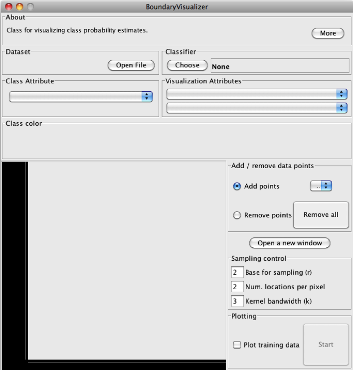
Passo 3 – Clique no Botão “Open File”, localize o arquivo “íris_mod.arff” e carregue no “BoundaryVisualizer. Os Vetores de Treinamento (representados por pontos) devem aparecer na tela de visualização do”BoundaryVisualizer” (Figura 5.17). (Como o “BoundaryVisualizer” leva em conta os ajustes da última vez em que ele foi utilizado, a imagem que aparece na tela pode variar de simulação para simulação.).

Passo 4 – Na parte superior direita, em “Classifier”, clique em “Choose” (Figura 5.17), escolha “Classifiers” , depois “functions” e, finalmente “SMO”, como ilustra a Figura 5.18. Inicialmente deixe os valores default do SMO.

Marque a opção “Plot training data” (Figura 5.18), na parte inferior direita, para que ao final da simulação apareçam não apenas as bordas de decisão do classificador, mas também os dados usados no treinamento. Dê um clique em “Start” (Figura 5.18).
Lentamente as bordas de decisão do classificador vão se formando, enquanto uma linha horizontal corre a tela indicando que a simulação está em progresso.
Passo 5 – O número de Vetores de Treinamento classificados erroneamente deve ser em torno de 6. Vá com o mouse novamente na parte superior direita do “BoundaryVisualizer” e clique com o botão da esquerda sobre a palavra “SMO”, ao lado de “Choose”, no campo “Classifieres”. Uma janela de ajustes dos parâmetros do SMO, semelhante à mostrada na Figura 5.19, deve se abrir.

Nesta janela, no botão “More” há uma explicação sucinta de todos parâmetros mostrados.
Passo 6 – Faça novas simulações variando o valor default do Parâmetro de Complexidade C de 1.0 para 2.0, 5.0, 30.0 etc. e confira o número de Vetores de Treinamento que continuam classificados erroneamente. Com ajuste de C = 2.0 e kernel “PolyKernel” foi rodada uma simulação, cujos resultados são mostrados na Figura 5.20.

Quando o valor do parâmetro C foi alterado para 91, as Bordas de Decisão se alteraram, como mostra a Figura 5.21.
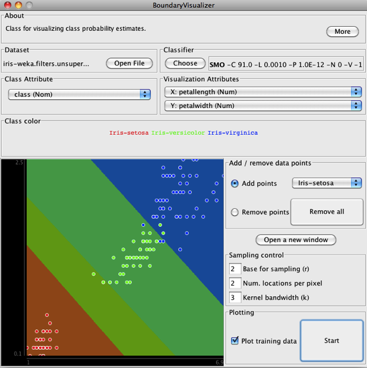
Como pode ser observado, há dois ou três pontos verdes e azuis que se parecem com “outliers”. Vamos retirar alguns deles, ativando a opção “Remove points” (Figura 5.21), e ver como a Borda de Decisão se altera. A Figura 5.22 mostra o resultado da remoção de alguns pontos azuis da tela, usando o botão esquerdo do mouse.
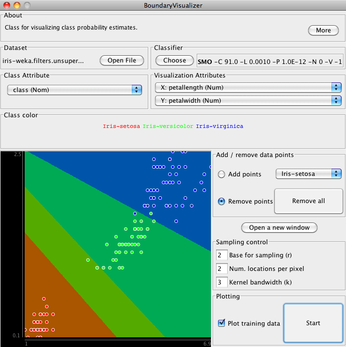
Como pode ser observado na Figura 5.22, a Borda de Decisão superior sofreu uma alteração significativa, mostrando que Vetores de Treinamento próximos das Margens têm um peso muito grande nos resultados obtidos.
Passo 7 – Novos kernels podem ser escolhidos entre os ajustes do SMO. As cores do painel do “BoundaryVisualizer” podem ser alteradas, clicando sobre os nomes das três “iris” no campo intermediário “Class color”. Outros ajustes interessantes podem ser feitos no “BoundaryVisualizer” e testados em novas simulações. Bom trabalho!
5.9 Considerações Finais
Nesta unidade, apresentamos um tipo de algoritmo de Aprendizado Estatístico conhecido como Máquina de Vetores de Suporte.
Entre suas grandes vantagens, podemos citar:
Por ser um algoritmo determinístico, se uma simulação for > repetida como os mesmos valores iniciais e os mesmos parâmetros, > obtém-se o mesmo resultado (diferentemente do que ocorre com as Redes Neurais).
Durante o aprendizado não se verifica o problema de mínimos > locais na otimização da Função Custo de aprendizado. Há apenas > um mínimo global que corresponde ao classificador com margem > máxima.
As MVS estão menos sujeitas ao problema do overfitting > comparativamente às Redes Neurais, porque a indução do > classificador é menos sensível à retirada ou acréscimo de um ou > outro Vetor de Treinamento (a menos que seja um Vetor de Suporte. > Na prática, porém, os Vetores de Suporte constituem uma pequena fração dos > Vetores de Treinamento).
Comparando com os algoritmos de Aprendizado Orientado a Conhecimento, as MVS apresentam tempo de treinamento mais elevado, porém sua taxa de acerto costuma ser mais elevada, porque o princípio de Margem (Suave) Máxima pode ser funcionalmente equivalente a uma borda de decisão não linear.
Como desvantagem com relação aos algoritmos de Aprendizado Orientado a Conhecimento, podemos citar a dificuldade em interpretar os resultados do aprendizado, que na prática é um conjunto de pesos do vetor w, ou algo equivalente. Outro aspecto que pode ser visto como uma desvantagem das MVS em relação a outros modelos, é que não é possível incorporar Conhecimento do Domínio do Problema no Modelo gerado. Numa Rede Neural, por exemplo, a topologia da rede reflete o Conhecimento do Domínio do Problema. Além disso, redes com multicamadas de neurônios podem aprender a ignorar Atributos irrelevantes (Witten & Frank, 2005).
Através de exemplos e interpretações geométricas, tentamos mostrar que o desempenho de uma MVS pode ser substancialmente influenciado pela escolha do kernel e do Parâmetro de Complexidade C. Por se tratar de um algoritmo de aprendizado supervisionado, ou seja, os rótulos das classes dos Vetores de Treinamento já são previamente conhecidos, é possível desenvolver um kernel específico para uma aplicação especial (embora não seja algo muito simples) e avaliar empiricamente o desempenho do kernel usando o método da Cross-validation.
Os argumentos e ilustrações aqui utilizados para explicar o algoritmo das MVS foram baseados num espaço bidimensional. No entanto, eles podem ser estendidos para o espaço tridimensional, quando então a reta que representa o classificador deve ser substituída por um plano. Da forma semelhante, os mesmos argumentos podem ser aplicados a espaços com mais de três dimensões, e neste caso o classificador passa a ser representado por um hiperplano.
5.10 Lista de Exercícios
1. (20%) Explique com suas próprias palavras o que vem a ser um kernel no contexto de SVM.
2. (30%) Explique com suas próprias palavras qual a função do Fator de Complexidade C e como ele pode afetar tanto a taxa de erros de treinamento como a de classificação.
3. Carregue o arquivo “iris.arff” (anexo) no Weka e faça a classificação com uma Máquina de Vetores de Suporte usando o algoritmo “SMO”, (clique na aba “Classify”, depois “Choose”, escolha “functions” e clique em “SMO”) com o método “Cross-validation” (10 Folds).
(a) (30%) – Escolha valores para o Fator de Complexidade C entre 1 e 5 e analise os resultados da Matriz de Confusão. (Para ajustar o valor de C, clique com o botão esquerdo do mouse sobre a palavra “SMO”, ao lado de “Choose”, e mude o valor de C na janela que deve se abrir).
(b) (20%) – Compare o desempenho dos kernels “PolyKernel” e “RBFKernel”. (Para escolher o tipo de kernel, clique com o botão esquerdo do mouse sobre a palavra “SMO”, ao lado de “Choose”, e escolha o kernel na janela que deve se abrir).
5.11 Referências do Capítulo
Este capítulo baseou-se nos fundamentos teóricos e práticos que consolidaram o aprendizado de máquina e a mineração de dados. A base histórica das redes neurais seguiu o trabalho clássico de Rosenblatt (1957) sobre o Perceptron. Para a fundamentação de Support Vector Machines (SVM), apoiamo-nos no artigo seminal de Cortes; Vapnik (1995) e nas otimizações práticas propostas por Platt (1998), complementados pela teoria de kernels detalhada em Schölkopf; Smola (2001). Os conceitos estruturais do processo de descoberta de conhecimento e algoritmos foram fundamentados nas obras de Witten; Frank (2005), Witten; Frank (2005), Tan; Steinbach; Kumar (2009) e Rocha; Cortez; Neves (2008), utilizando como suporte técnico a ferramenta WEKA (Frank; Hall; Witten (2016)). Por fim, a contextualização em sistemas inteligentes utilizou a organização de Rezende (2005).